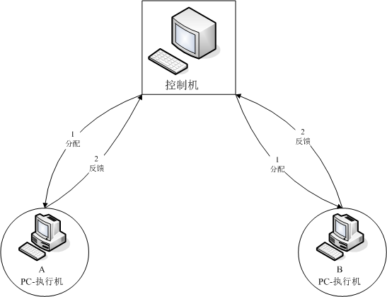
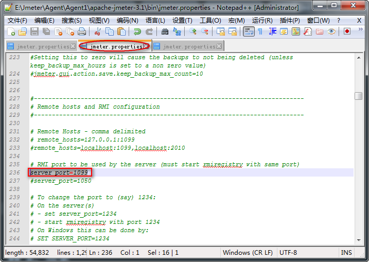
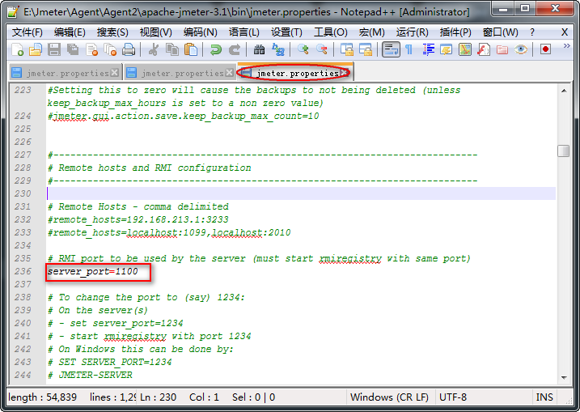
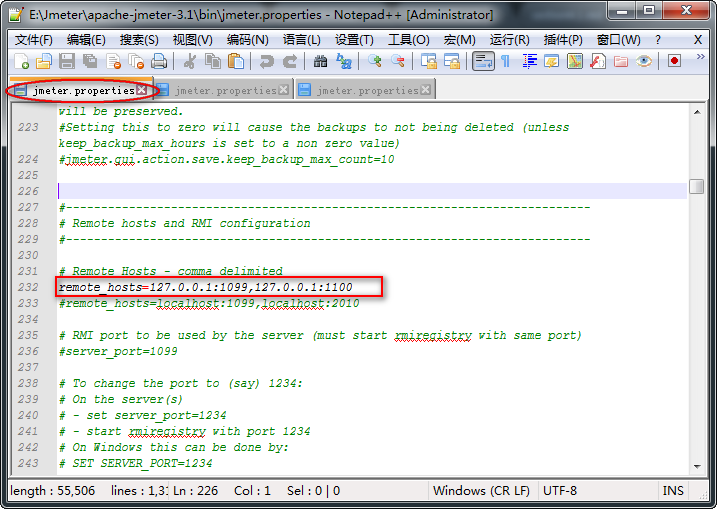
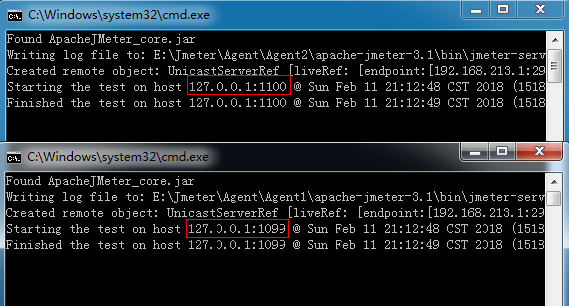
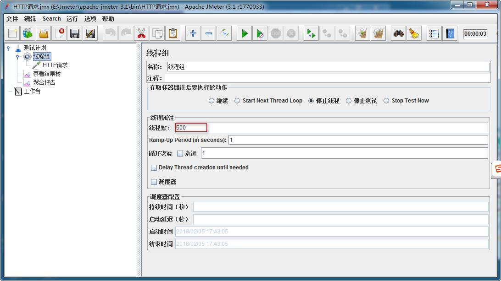
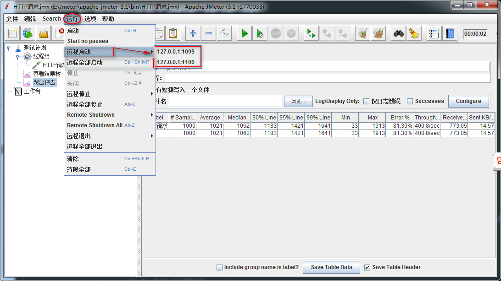

Jmeter 分布式
目标
- 了解Jmeter分布式的应用场景
- 掌握Jmeter分布式环境部署
1. 为什么要学习Jmeter分布式部署？
1.1 需求
1. 对学院接口(查询学院-所有)进行1000用户并发访问，测试服务器处理批量请求能力
1.2 问题
1. 我们单台电脑由于配置(CPU、内存)问题，最模拟500用户时，就出现卡死现象
2. 什么是分布式？
概念：由多台电脑共同完成同一1个任务(请求)部署，我们称这种部署为分布式部署
2.1 分布式原理
1. 一台电脑作为控制机(Controller)，其它电脑做为执行机(Agent);
2. 执行时，控制机会把脚本发送到每台执行机上，执行机拿到脚本后就开始执行
3. 执行机执行时不需要启动Jmeter界面，可以理解它是通过命令行模式执行的
4. 执行完成后，执行机会把结果回传给控制机，控制机会收集所有执行机的信息并汇总

2.1 解决方案分析
1. 1台电脑(控制机)分发执行任务
2. 2台电脑(执行机)执行任务
3. 在执行机上启动监听服务程序
4. 在控制机上启动运行
5. 测试计划->聚合报告
2.2 技术难点分析
1. 执行机-jmeter.properties设置
2. 控制机jmeter.properties设置
3. 执行机启动分布式监听服务程序
3. 2台执行机,用户数如何设置
2.3 执行机Jmeter.properties配置图
 
1. 打开bin目录下jmeter.properties配置文件
2. server_port=1099
1) 1099:为执行机自定义端口号
3. 提示：
1) 去除备注符号 #
2) 自定义端口号时，注意选择未必占用端口号
2.4 控制机Jmeter.properties配置图

1. remote_hosts=127.0.0.1:1099,127.0.0.1:1100
1) remote_hosts：为执行机IP地址和端口号
2. 注意：
1) 多个执行机之间使用逗号(,)隔开
2.5 执行机启动分布式监听程序效果图

1. 运行bin目录下jmeter-server.bat
2. 运行后勿关闭黑色窗口
2.6 控制机-线程数设置图：

1. 需求1000用户,两台执行机同时接受控制机脚本去执行然后反馈给控制机，所以线程数设置500
2.7 控制机-运行分布式执行机图

1. 菜单-运行->选择全部启动
2. 快捷键->Ctrl+Shift+R
2.8 聚合报告
这里先不做讲解，我们只看# Samples属性，查看统计取样数量
2.9 提示
1. 修改完端口要重启Jmeter.bat
2. 控制机和执行机分开(为了方便教学,这里采用控制机和代理机在1台机器上)
1). 由于控制机需要发送信息给执行机并且会接受执行机回传的测试数据所以控制机自身会有消耗
3. 参数文件：如果使用csv进行参数化，那么需要把参数文件在每台执行机上拷一份且路径需要设置成一样的；
4. 每台机器上安装的Jmeter版本和插件最好都一致，否则会出一些意外的问题；
5. 执行机上Jmeter也许需要配置JDK环境变量；
2.10 分布式-总结
1. 分布式概念
2. 分布式原理
3. 执行机配置文件设置
4. 控制机配置文件设置
5. 控制机线程数设置